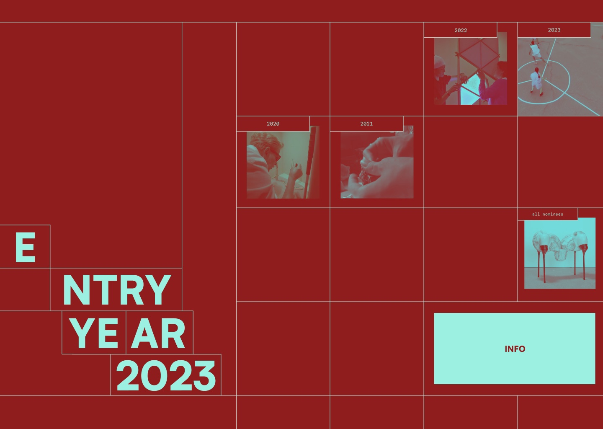
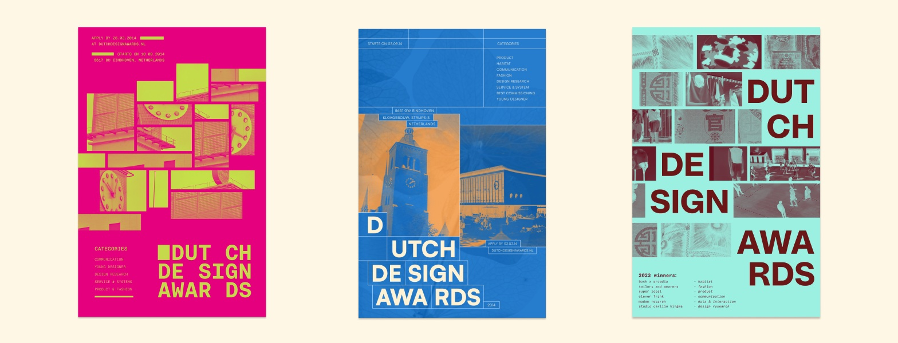
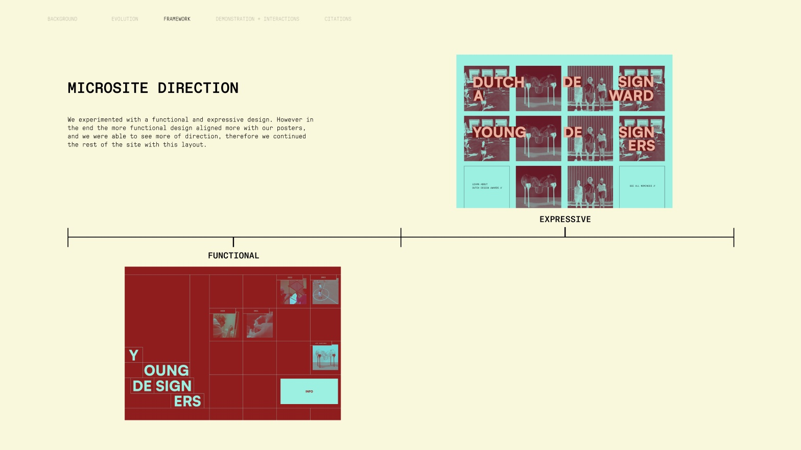

Giving young designers the main stage.
Dutch Design Awards
A poster series and event microsite that spotlights the Young Designers category at the Dutch Design Awards.

Eight categories,
one overlooked.
The Dutch Design Awards span eight categories. Young Designers is different: nominees submit a whole portfolio, the category comes with a grant, and it’s often overlooked.
We designed a microsite for the nine-day event that pairs the schedule with the young nominees.

Posters first,
then the web.
We built the visual system on posters first, testing three directions from Ellen Lupton’s design principles. Early rounds were too literal; the final three balanced image, type and space.
Image as figure-ground
One photo cropped and repeated at different sizes forms a new shape on the page.
Visible grids
Grid lines divide the page into sections and stitch clusters back together.
A pattern, broken
Fragments form a pattern, and the headline sits exactly where it breaks.

Final posters · one per line of investigation
A functional grid,
not an expressive one.
We tested an expressive layout against a functional one. The functional grid matched the posters and read clearer, so the whole site runs on it.

Functional vs expressive · we chose functional
Image on hover
On the all-nominees list, hovering a row previews that designer’s work beside it.
Years that preview
Hovering a year enlarges it and plays a clip from each nominee before you commit.
Spotlight or event info
A single click moves visitors between the designers and practical event details.
Homepage · early exploration to the final square grid
Three posters,
one working site.
Every page carries the poster system: a homepage, nominees by year, every past nominee, the nine-day schedule and the category’s history.
Microsite walkthrough
What I owned
Research
- Client research on the Dutch Design Awards and its categories
- Exhibition research into the nine-day Dutch Design Week event
Posters
- Poster explorations across the lines of investigation
Microsite
- Microsite screens in the functional grid system